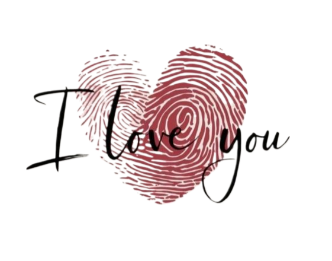

Thank you for saying yes to me, to us, to something that isn't always easy but is always real. Thank you for trusting what we have, even when it lives across cities and time zones. I promise I'll keep choosing you on the good days, the boring days, and especially on the days when distance feels unfair.
One day, this waiting will turn into moments we'll laugh about — how we survived on calls, screenshots, and "I miss you" texts. Until then, I'll hold onto this yes like my favourite promise.
So here's me, officially yours, smiling at a screen and feeling closer to you than ever.
